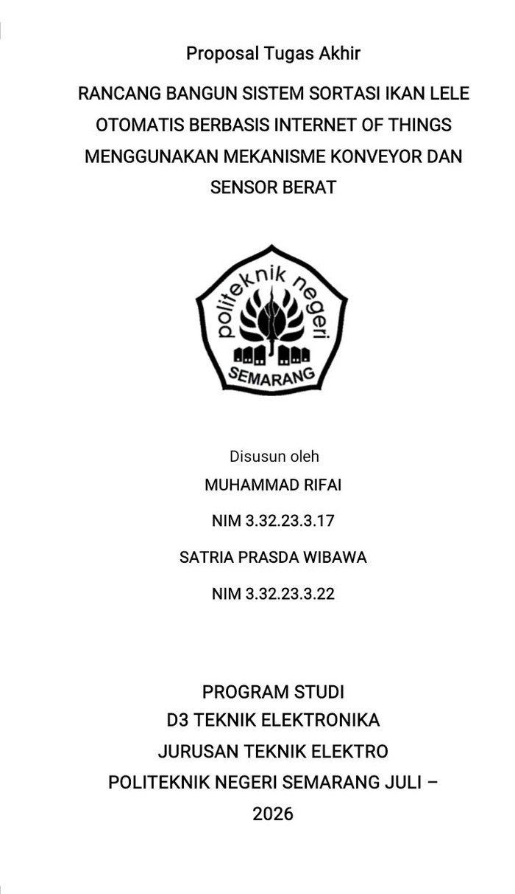

◆ Tentang Saya
Saya merupakan mahasiswa D3 Teknik Elektronika Politeknik Negeri Semarang yang memiliki minat pada bidang Internet of Things (IoT), Instrumentasi, Otomasi Industri, dan Elektronika Terapan. Berpengalaman dalam pengembangan proyek berbasis Arduino, integrasi sensor, simulasi menggunakan MATLAB dan Proteus, serta perawatan perangkat elektronika melalui program magang di CV Hartono Mitra Audio Equipment. Saat ini sedang mengembangkan tugas akhir mengenai sistem sortasi ikan lele otomatis berbasis IoT menggunakan mekanisme konveyor dan sensor berat.
▣ Software & Tools
✶ Bidang Minat
🎓 Pendidikan
Politeknik Negeri Semarang
D3 Teknik Elektronika
2023 – 2026
Mahasiswa Program Studi D3 Teknik Elektronika.
SMK Muhammadiyah Kudus
Teknik Audio Video
2020 – 2023
Lulusan Teknik Audio Video.
💼 Pengalaman Magang
CV Hartono Mitra Audio Equipment
Teknisi Servis Audio dan Elektronika
2022 – 2023
- Diagnosis dan perbaikan perangkat audio elektronik.
- Pengujian dan pengukuran komponen elektronika.
- Troubleshooting rangkaian analog dan digital.
- Penggunaan alat ukur seperti multimeter dan osiloskop.
- Pengujian fungsi perangkat setelah perbaikan.
🗂 Proyek
📄 Tugas Akhir

PROPOSAL
TUGAS AKHIR
Rancang Bangun Sistem Sortasi
Ikan Lele Otomatis Berbasis IoT
Rancang Bangun Sistem Sortasi Ikan Lele Otomatis Berbasis Internet of Things Menggunakan Mekanisme Konveyor dan Sensor Berat
Sistem sortasi ikan lele otomatis menggunakan sensor berat, konveyor, dan monitoring berbasis Internet of Things untuk mempermudah proses penyortiran berdasarkan berat ikan secara efisien dan akurat.